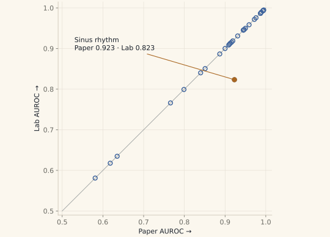
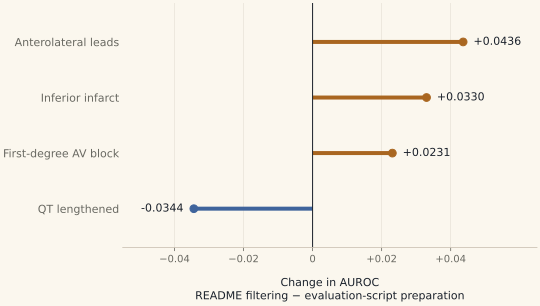

Pertzel Lab · Season 1 · Week 2
Most individual results reproduced.
The reported average is still unexplained.
I ran the authors’ released ECG model on a dataset they had already tested. Most individual scores came back very close. The remaining differences are worth understanding, without claiming more than this experiment shows.
An independent check of an existing evaluation.
Before asking how well ECGFounder works in another setting, I wanted to check whether I could reproduce one of the evaluations in its paper. I used the authors' released 12-lead model on PTB-XL, a dataset they had already tested. I did not train a new model.
Most individual scores came back very close to the published table. I also found an unexplained difference in the reported average and showed how changing the signal preparation can move individual scores.
The authors had already tested ECGFounder on several datasets outside the one used to train it. My contribution here is an independent check of one of those evaluations, with the choices and discrepancies documented. That gives me a clearer starting point for testing it in another setting. Whether it helps clinicians or patients is a further question this experiment does not answer.
New to ECGs and the model?
An ECG records changes in the heart’s electrical activity. ECGFounder is the trained AI software that reads it. PTB-XL is the test dataset: recordings together with reference labels used to evaluate the model’s outputs.
A ranking score, not “percent accurate”.
The score used here is AUROC. Imagine choosing one recording with a finding and one without it. Does the model give the first recording the higher score? AUROC measures how well it ranks those pairs: 0.5 is chance-level ranking and 1.0 is perfect ranking on the evaluated data.
It is not a percentage of correct diagnoses. It does not tell us where to draw a yes-or-no threshold, how many false alarms we will get, or whether the model’s probabilities are well calibrated.
Most dots sit on the agreement line.
Each dot is a finding. A dot on the diagonal means the paper and lab report the same AUROC.


Of the 30 scores in the paper's table, 29 were within 0.001 of my run. That gives me confidence that most of the individual results reproduce closely. It also points towards the evaluation script as a useful route for reproducing them, although matching scores don't establish the authors' exact setup.
Sinus rhythm was the exception: 0.923 in the paper and 0.823 in my run. I checked the label mapping and the model's other outputs without resolving the difference. A typo is one possible explanation, but I haven't established the cause.
The headline average needs explaining.
The paper reports an average of 0.924. The plain mean of the 30 scores printed in its table is 0.8977. My mean across those same 30 findings is 0.8943.
Those are two different questions: can I reproduce the individual results, and can I explain the reported average? Most individual results reproduce closely. I still do not know which scope or calculation produced the headline number, so I cannot establish its cause from this run.
The same 30 findings, averaged.
Plain mean of its 30 published AUROCs.
Plain mean across those same 30 findings.
The paper’s reported headline. Its scope and calculation remain unexplained. It is shown separately because I have not established that it is the same aggregate.
The original numerical check was not met. Before the run, I set a tolerance of 0.01 around 0.924. The pre-stated 31-finding mean was 0.8909, about 0.0331 below that target. Reporting close individual matches does not change that result.
The 31-finding mean includes one additional evaluable label, “anterolateral leads”, that is absent from the paper’s 30-row table. That is why 0.8909 should not be presented as a directly comparable mean of those 30 rows.
The instructions don’t quite line up.
The instructions for preparing the ECGs don’t quite line up. The paper describes filtering out noise. The README points to a filtering routine with different settings. But the released PTB-XL evaluation script skips those filters and just centres and rescales each recording.
So I ran the model both ways: following the evaluation script, then following the README’s filtering instructions. The average across 31 findings barely moved—just 0.0004. But underneath that average, some individual scores improved and others got worse, with changes of up to 0.044.
That caught my attention because the model and the recordings hadn’t changed. Preparing the signal differently was enough to shift some results, and looking only at the average would have hidden that. Anyone trying to reproduce or build on this work needs to know which preparation steps were used. This experiment doesn’t establish which approach is best in clinical use.
A small average can hide larger movements.
Right of zero: a higher AUROC after filtering. Left: a lower AUROC. These are the four largest changes among all 31 findings.


See every finding and both preparation paths
| Finding | Paper | Script | Filtered | Change |
|---|---|---|---|---|
| Anterior infarct | 0.635 | 0.6348 | 0.6412 | +0.0064 |
| Anterolateral infarct | 0.945 | 0.9453 | 0.9448 | -0.0005 |
| Anterolateral leads | — | 0.7883 | 0.8319 | +0.0436 |
| Anteroseptal infarct | 0.945 | 0.9454 | 0.9422 | -0.0032 |
| Atrial fibrillation | 0.993 | 0.9933 | 0.9933 | +0.0000 |
| Atrial flutter | 0.993 | 0.9927 | 0.9913 | -0.0014 |
| Electronic atrial pacemaker | 0.909 | 0.9086 | 0.9004 | -0.0082 |
| Inferior infarct | 0.851 | 0.8506 | 0.8836 | +0.0330 |
| Lateral infarct | 0.916 | 0.9156 | 0.9077 | -0.0079 |
| Left anterior fascicular block | 0.972 | 0.9717 | 0.9738 | +0.0021 |
| Left atrial enlargement | 0.799 | 0.7992 | 0.8065 | +0.0073 |
| Left bundle branch block | 0.989 | 0.9894 | 0.9884 | -0.0010 |
| Left posterior fascicular block | 0.840 | 0.8402 | 0.8286 | -0.0116 |
| Left ventricular hypertrophy | 0.900 | 0.9001 | 0.8900 | -0.0101 |
| Low voltage qrs | 0.581 | 0.5811 | 0.5762 | -0.0049 |
| Nonspecific intraventricular block | 0.766 | 0.7661 | 0.7505 | -0.0156 |
| Normal ecg | 0.887 | 0.8867 | 0.8847 | -0.0020 |
| Premature ventricular complexes | 0.987 | 0.9867 | 0.9888 | +0.0021 |
| Qt has lengthened | 0.931 | 0.9310 | 0.8966 | -0.0344 |
| Right atrial enlargement | 0.959 | 0.9585 | 0.9520 | -0.0065 |
| Right bundle branch block | 0.976 | 0.9758 | 0.9779 | +0.0021 |
| Right ventricular hypertrophy | 0.913 | 0.9131 | 0.9104 | -0.0027 |
| Septal infarct | 0.947 | 0.9468 | 0.9453 | -0.0015 |
| Sinus bradycardia | 0.950 | 0.9498 | 0.9540 | +0.0042 |
| Sinus rhythm | 0.923 | 0.8233 | 0.8262 | +0.0029 |
| Sinus tachycardia | 0.994 | 0.9938 | 0.9939 | +0.0001 |
| Supraventricular tachycardia | 0.995 | 0.9949 | 0.9926 | -0.0023 |
| Ventricular tachycardia | 0.987 | 0.9865 | 0.9910 | +0.0045 |
| With 1st degree av block | 0.911 | 0.9109 | 0.9340 | +0.0231 |
| With qrs widening | 0.618 | 0.6177 | 0.6134 | -0.0043 |
| Wolff-parkinson-white | 0.919 | 0.9188 | 0.9207 | +0.0019 |
The preparation details
The paper describes a 0.5–50 Hz filter and mains-frequency notch filters. The README routine uses a 0.67–40 Hz band-pass filter, a 50 Hz notch and baseline correction. The released evaluation script uses global z-score normalisation without those filters.
I compared the script path with the README path. I did not run a separate literal implementation of the paper’s stated filtering path.
A matching score doesn’t settle the counts.
I also found a mismatch in the counts. For low-voltage QRS, the paper lists 182, while the released label file I used marks 3,327 recordings with that finding. The label-file count comes from the reference labels used to score the model, not from the model's own predictions.
The score still closely matches the paper, but that doesn't explain the count difference. I need to clarify what the paper's count represents and check how the released labels were defined and loaded before treating the two evaluations as identical.
Keep each patient’s recordings together.
The score changes from filtering are measured differences on this dataset. I haven't yet estimated uncertainty around those changes.
The uncertainty ranges I calculated for the averages also have a limitation: I resampled ECG recordings individually, even though some came from the same person. Recordings from the same person can be related, so those ranges may look too precise.
A stronger check would keep each patient's recordings together and compare both preparation methods on the same groups of patients. Until then, I'll report the changes as observations from this dataset, with their wider reliability still open.
PTB-XL includes 21,799 recordings from 18,869 patients. The planned follow-up will resample patients, keep their recordings together, and compare both preparation paths using the same patient draws. It is an exploratory follow-up after seeing these results, not a newly pre-stated confirmation of them.
One model, two sets of recordings.
Next I want to test the single-lead version of ECGFounder on recordings taken during surgery. That is a different model from the 12-lead version I used in Week 2, and it receives just one electrical view of the heart.
To make the comparison more informative, I plan to run that same single-lead model on lead II from both PTB-XL and VitalDB, using consistent preparation and comparing findings that can be defined in both datasets. That will let me compare the same model across two sets of recordings. It will still leave differences in the patients, recording conditions and labels to consider.
VitalDB Arrhythmia gives me selected stretches of ECG recorded during surgery, with rhythms reviewed by anaesthesiologists. Those stretches were screened for possible rhythm abnormalities, so they are not a complete picture of an operation or everyday life.
This test can show how the model performs on those labelled recordings. It cannot, by itself, tell me how many false alarms it would produce during a full day of monitoring, or whether using it would improve someone's care.
VitalDB is the broader collection of surgical recordings. VitalDB Arrhythmia provides the reviewed labels for selected ECG segments. The labels are used to evaluate model outputs; they are not fed into the AI as hints.
The additional single-lead PTB-XL baseline and patient-grouped comparison are planned research tasks. Their time will be allocated at Sunday planning on 1 November. Neither is a new result on this page.
What this correction changes.
This draft revises the 25 October post. It corrects the filtering description, separates the 30- and 31-finding averages, removes certainty about the authors’ exact setup and a possible typo, and makes the label-count and statistical limits explicit. It also distinguishes the next single-lead experiment from Week 2’s 12-lead reproduction.
The underlying saved results have not changed. The headline-average discrepancy and the count questions remain open. I contacted the authors on 21 October; there is no answer recorded in this review.
- Original ECGFounder paper, version 4 · PDF
- PTB-XL v1.0.3 · Wagner et al. · CC BY 4.0
- VitalDB · VitalDB Arrhythmia
- Saved per-finding scores used in these figures
This work reports model performance against a dataset’s reference labels. It does not provide health advice or establish clinical benefit. The lab repository is planned to become public with the Season 1 research output.